광고도장기능사 (2003-01-26 기출문제)
1과목: 공예디자인
1. 다음 색 중 중성색은?
- 연두
- 파랑
- 빨강
- 노랑
(정답률: 알수없음)

2. 배색 효과에 대한 설명 중 틀린 것은?
- 난색계통의 배색은 따뜻하고 활동적이며 부드럽다.
- 한색계통의 배색은 서늘하고 가라앉은 느낌이 든다.
- 난색과 한색의 배색은 침착하고 수수하며 중량감이 있다.
- 보색 계통의 배색은 강하고 뚜렷하다.
(정답률: 알수없음)
3. 다음 정투상도 그림의 실제 모양은?
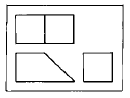
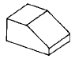
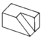
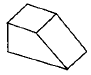
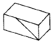
(정답률: 알수없음)
4. 인간이 생활하기 위한 모든 물건의 디자인은?
- 그래픽 디자인
- 산업 디자인
- 실내 디자인
- 환경 디자인
(정답률: 알수없음)
5. 다음 중 텍스처에서 주는 느낌에 해당되는 것은?
- 부드러움
- 즐거움
- 화려함
- 가까움
(정답률: 알수없음)
6. 다음 중 점대칭에 해당하는 그림은?
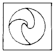
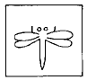
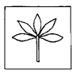
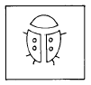
(정답률: 알수없음)
7. 다음 중 비례(Proportion)와 관련이 먼것은?
- 길이의 길고 짧은차
- 크기의 대소차
- 분량의 차
- 조화의 차
(정답률: 알수없음)
8. 조선시대 일반적인 문화의 설명 중 잘못된 것은?
- 배불숭유 정책에 의하여 유교 문화의 발상이 되었다.
- 기능인들을 천대시 하여 박해하였다.
- 작품의 성격이 전반적으로 세련되고 우아하다.
- 민족적이며 풍토적인 특색을 나타 내었다.
(정답률: 알수없음)
9. 다음 공예사적 내용이 잘못된 것은?
- 낙랑공예는 한(漢)나라의 취미와 고집을 버리고 한반도의 토착적 요소를 지닌 것이다.
- 고구려 공예는 웅혼, 장엄한 내용을 바탕으로 한 것이다.
- 신라의 공예는 진취적 기상과 생활의 풍취를 중심으로 한 것이다.
- 백제의 공예는 온화, 단순한 형태를 감각적으로 다듬은 것이다.
(정답률: 알수없음)
10. 무대조명에 쓰이는 혼합법은?
- 감산 혼합
- 가산 혼합
- 중간 혼합
- 회전 혼합
(정답률: 알수없음)
11. 색료 혼합의 2차색에서 나타나는 현상 중 틀린 것은?
- 명도가 낮아진다.
- 채도가 낮아진다.
- 색광의 2차색과 같다.
- 색상이 변한다.
(정답률: 알수없음)
12. 녹색쟁반에 얹어놓은 귤이 실지보다 붉은빛을 띠고 있다. 이러한 현상은?
- 색상대비
- 명도대비
- 채도대비
- 보색대비
(정답률: 알수없음)
13. 복잡한 구조를 알게하고 각 부분과의 관계를 알 수 있게 하여 전체의 구조를 이해하기 쉽게 만든 도면은?
- 조립도
- 부품도
- 공정도
- 축척도
(정답률: 알수없음)
14. 일반적인 표제란의 형식에서 기입 안해도 되는 것은?
- 척도
- 재료
- 작성일
- 도명
(정답률: 알수없음)
15. 다음 도면의 면적에 관한 내용 중 올바른 것은?
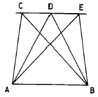
- △ABC = △ABE ≠ △ABD
- △ABC = △ABD = △ABE
- △ABC ≠ △ABD = △ABE
- △ABC ≠ △ABD ≠ △ABE
(정답률: 알수없음)
16. 주어진 길이(R)를 1변으로 하는 정5각형 작도에서 길이 DE를 옳게 나타낸 것은?
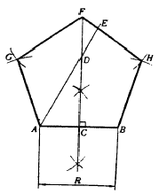
- DE =1/2 AB
- DE = AB
- DE = 1/2 AD
- DE = AD
(정답률: 알수없음)
17. 하나의 투상면에 입체의 모양을 나타낼 때, 3직교축이 각 120° 씩 나타낸 것은?
- 등각투상도
- 2축 투상도
- 부등각 투상도
- 정투상도
(정답률: 알수없음)
18. 다음 그림중 편화의 과정을 나타낸 마지막 단계는?
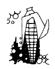
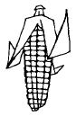
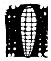
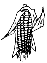
(정답률: 알수없음)
19. 다음 점에 대한 설명 중 가장 올바른 것은?
- 점은 넓이를 갖는다.
- 점은 2차원의 세계에 존재한다.
- 점의 형태는 원이다.
- 한개의 점은 위치를 가리킨다.
(정답률: 알수없음)
20. 빨강의 순색을 먼셀 색상기호로 표시한 것은?
- 5R 4/10
- 5R 4/14
- 10R 6/14
- 10R 4/14
(정답률: 알수없음)
2과목: 광고도장재료
21. 다음 단색조화에 관한 설명 중 가장 올바른 것은?
- 흰색, 회색, 검정 등 무채색과 어떤 유채색과의 조합을 말한다.
- 동일색 계통의 색으로서 조합하는 경우를 말한다.
- 색상이 가까운 것 끼리의 조합을 말한다.
- 보색에 가까운 두가지색을 조합한 배색을 말한다.
(정답률: 알수없음)
22. 도형 또는 물체의 좌우측이 같을 때 그 중심을 표시하는 선의 명칭은?
- 가는 실선
- 굵은 실선
- 파단 선
- 가는일점 쇄선
(정답률: 알수없음)
23. 멜라민 수지에 관한 설명 중 틀린 것은?
- 내열성이 커서 300℃까지 견딘다.
- 무색 투명하여 착색이 용이하다.
- 내수성이 우수하다.
- 용제성, 내약품성이 양호하다.
(정답률: 알수없음)
24. 에나멜 페인트(enamel paint)의 특징 중 잘못된 것은?
- 일반 유성 페인트보다 도막의 건조가 빠르다.
- 경도 및 내구성이 좋다.
- 내후성이 좋고 균열 발생도 적다.
- 무광성으로 내열성이 좋다.
(정답률: 알수없음)
25. 다음 목재의 단면 그림에서 가운데의 약간 어두운 부분은?
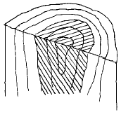
- 변재
- 심재
- 춘재
- 추재
(정답률: 알수없음)
26. 활엽수이며 재질이 비교적 단단하고 무늬가 아름다워 디자인 제품의 재료로 널리 사용되는 목재는?
- 소나무
- 삼나무
- 느티나무
- 비자나무
(정답률: 알수없음)
27. 다음 종이원료 중 가장 많은 수요를 차지하고 있는 것은?
- 목재 펄프
- 린터(linter)펄프
- 짚 펄프
- 버개스(bagasse)펄프
(정답률: 알수없음)
28. 다음 중 아크릴 가공시 가장 많이 이용되는 접착제는?
- 본드
- 실리콘
- 접착테프
- 클로르포름
(정답률: 알수없음)
29. 저렴한 가격 때문에 일반적으로 가장 대량으로 사용되는 금속박은?
- 금박
- 은박
- 주석박
- 알루미늄박
(정답률: 알수없음)
30. 아연철판에 염화 비닐 수지계의 잉크로 여러가지 무늬를 인쇄한 것은?
- 식모 아연철판
- 도장철판
- 프린트 철판
- 범랑 철판
(정답률: 알수없음)
31. 네온 방전등 전체가 꺼져 있는 경우의 고장 확인으로서 부적합 한 것은?
- 주개폐기 휴즈의 단절 여부
- 1차 배선의 접속 불량 여부
- 타임 스윗치의 고장 여부
- 분기 개폐기 휴즈 단절의 여부
(정답률: 알수없음)
32. 조명계획의 순서가 올바른 것은?
- 소요전등 수 결정 - 전등 종류 선정 - 조명기구 배치 - 소요조도 결정
- 소요조도 결정 - 전등 종류 선정 - 조명기구, 방식선정 - 소요전등 수 결정
- 소요전등 수 결정 - 조명기구, 방식선정 - 전등 종류선정 - 조명기구 배치
- 소요조도 결정 - 전등 종류 선정 - 소요전등 수 결정 - 조명기구,방식선정
(정답률: 알수없음)
33. 다음 중 회석제로 쓸 수 없는 것은?
- 테레빈유
- 휘발유
- 벤졸
- 산화납(PbO)
(정답률: 알수없음)
34. 다음 합판의 특성에 관한 설명 중 잘못된 것은?
- 판재에 비해 균질이며, 좋은 재료를 많이 얻을수 있다.
- 잘 갈라지며 방향에 따른 강도의 차가 크다.
- 단판은 얇으며, 건조가 빠르다.
- 단판마다 섬유방향과 직교되게 붙여댄 것이다.
(정답률: 알수없음)
35. 석재의 특성 중 틀린 것은?
- 불연성이다
- 강도가크다
- 내구성이크다
- 채석이 편리하다.
(정답률: 알수없음)
36. 다음 중 목재 변색의 가장 큰 원인이 되는 광선은?
- 자외선
- 적외선
- 가시 광선
- 열선
(정답률: 알수없음)
37. 플라스틱의 표면 연마에 관한 설명 중 잘못된 것은?
- 버프그라인더는 무명에 연마제를 부착하여 사용한다.
- 줄질할 때 줄눈에 칩이 끼이지 않게 한다.
- 표면광내기는 #120의 사포지를 사용한다.
- 미세한 부분은 산소나 수소가스의 불꽃연마가 쓰인다.
(정답률: 알수없음)
38. 아라비아 고무풀은 어떤 나무에서 채취한 액체인가?
- 삼나무
- 아카시아
- 적송
- 전나무
(정답률: 알수없음)
39. 다음 중 천연섬유에 해당하는 것은?
- 폴리에스테르
- 무명
- 비닐론
- 스판텍스
(정답률: 알수없음)
40. 합성수지의 일반적인 단점에 해당하는 것은?
- 접착성이 떨어진다.
- 내화성이 작다.
- 마멸이 크다.
- 내산성이 부족하다.
(정답률: 알수없음)
3과목: 광고도장
41. 네온 변압기를 옥외에 설치할 경우 압출선의 방향은?
- 밑으로 향하게 한다.
- 위로 향하게 한다.
- 옆으로 향하게 한다.
- 앞으로 향하게 한다.
(정답률: 알수없음)
42. 잡지광고의 특성 설명 중 잘못된 것은?
- 새로운 소식을 신속히 전할 수 있다.
- 매체로서의 생명이 길다.
- 특정한 독자층을 갖는다.
- 회람율이 좋다.
(정답률: 알수없음)
43. 다음 중 광고의 구성에 해당되지 않는 것은?
- 광고매체의 선택
- 광고의 아이디어
- 직접적인 충격력
- 필요한 정보
(정답률: 알수없음)
44. 다음 광고디자인의 제작 과정 중 옳은 것은?
- 계획 → 요구 → 제작 → 사용
- 요구 → 계획 → 제작 → 사용
- 요구 → 제작 → 계획 → 사용
- 계획 → 제작 → 요구 → 사용
(정답률: 알수없음)
45. 광고나 편집에 있어서, 한정된 공간내의 구성요소를 목적에 따라 심리적으로나 미적으로 효과를 높이게 하는 것은?
- 레이아웃
- 드로윙
- 스페이싱
- 일러스트레이션
(정답률: 알수없음)
46. 핫 스프레이 도장에 대한 설명 중 잘못된 것은?
- 광택이 좋다.
- 공기를 쓰지 않아도 된다.
- 브러싱이 없다.
- 흐름, 풀림, 메마름이 적다.
(정답률: 알수없음)
47. 퍼티작업의 목적으로 가장 올바른 것은?
- 평활성을 유지하기 위하여
- 광택을 증가시키기 위하여
- 화재를 예방하기 위하여
- 착색효과를 나타내기 위하여
(정답률: 알수없음)
48. 아크릴 간판내부에 사용되는 적합한 전구는?
- 백열등
- 형광등
- 수은등
- 투광등
(정답률: 알수없음)
49. 광고물의 표시를 금지하는 장소가 아닌 곳은?
- 터널
- 교량
- 축대
- 주유소
(정답률: 알수없음)
50. 공공시설물을 이용하는 광고물의 기준 중 틀린 것은?
- 가로등주를 이용하는 광고물은 시.도조례가 정하는 바에 의하여 표시할 수 있다.
- 표시면적은 공공시설물 면적의 1/2이내 이어야 한다.
- 공공시설물의 효용을 저해하여서는 아니된다.
- 시.도지사가 지정하는 부분에 표시하여야 한다.
(정답률: 알수없음)
51. 금속도장의 전처리에 관한 설명 중 잘못된 것은?
- 가공공정의 가공유와 먼지, 수분, 녹 등이 도막의 부착성을 약화시킨다.
- 이물질을 제거하여 금속면을 활성면으로 변화시킨다.
- 금속면을 불활성면으로 변화시킨 후 녹의 확산을 방지한다.
- 다른 재료와의 색보정을 위하여 표백을 실시한다.
(정답률: 알수없음)
52. 광고 원안의 확대 및 축소시에 아주 작은 원을 반복하여 그릴 때, 다음 중 가장 적합한 제도 용구는?
- 운형자
- 템플릿
- 자유 곡선자
- 하단자
(정답률: 알수없음)
53. 다음 중 목재로 입체 광고면을 제작할 때 사용되는 목공구가 아닌 것은?
- 곱자
- 자유자
- 연귀자
- 자유 곡선자
(정답률: 알수없음)
54. 다음 중 안전 보호구를 착용해야 할 작업장이 아닌 것은?
- 습기가 있는 작업장
- 유해 물질을 취급하는 작업장
- 소음이 심하게 나는 작업장
- 유독가스, 증기, 분진이 발생하는 작업장
(정답률: 알수없음)
55. 인쇄 서체 중 명조체(바탕체)의 설명이 바르지 못한 것은?
- 세로획이 굵고 가로획이 가늘다.
- 일본의 문자 스타일에서 유래한 것이다.
- 금속활자의 발달에 기인한 기계적 명쾌함을 가진 서체이다.
- 가독성이 높아 신문, 잡지 등의 본문용으로 많이 사용된다.
(정답률: 알수없음)
56. 광고물 제작 도구 중 좋은 칠붓의 조건으로 틀린 것은?
- 털끝이 가지런히 정돈되어 있는 것
- 털의 굵기가 균일한 것
- 뿌리 다짐이 충분히 되어 있는 것
- 굵은 털과 가는 털이 섞여 있는 것
(정답률: 알수없음)
57. 광고물 제작 안전도 검사를 받아야 하는 경우가 아닌 것은?
- 광고물등의 규격, 위치 또는 장소를 변경한 경우
- 허가 기간을 연장 받고자 하는 경우
- 광고물을 철거 할 경우
- 시· 도 지사가 공중에 대한 위해를 방지하기 위하여 특별하다고 인정하는 경우
(정답률: 알수없음)
58. 도장 결함 중 흐름(runs) 현상의 방지대책이 잘못된 것은?
- 지정 점도가 되도록 희석한다.
- 얇게 2∼3회 도장한다.
- 증발이 빠른 신너를 사용한다.
- 실내 온도를 높인다.
(정답률: 알수없음)
59. 에칭(부식) 작업에서 선을 부식시킬 때 유의할 점은 산이 선의 깊이만을 부식시키는 것이 아니라 부식된 홈의 옆면도 동시에 부식시킨다는 점이다. 이러한 현상을 무엇이라고 하는가?
- 엠버싱(embossing)
- 언더커팅(undercutting)
- 잉킹(inking)
- 프린팅(printing)
(정답률: 알수없음)
60. 산업 안전의 중요성에 대한 설명 중 틀린 것은?
- 생명과 재산을 보호한다.
- 근로자와 기업의 발전을 도모한다.
- 기업의 대외 여론과 기업 활동을 감소 시킨다.
- 사기와 생산의욕을 향상시킨다.
(정답률: 알수없음)